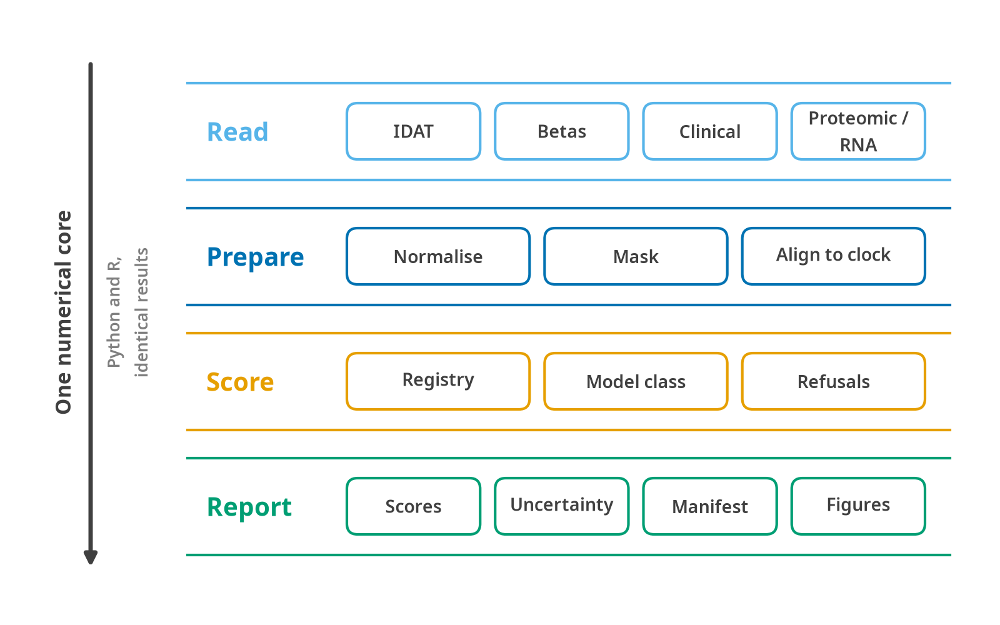

Architecture
What computes what, and how much of it exists
Framework for Aging CLocks, Omics Normalisation and Age scoring.
A single-stop toolkit for computing aging scores from multiomic data, usable identically from Python and R, on CPU or GPU, with a download module that takes public-database accessions and a preprocessing module that turns raw or public data into a scoreable matrix.
This document is the design record. It says which file computes what, what each function takes and returns, and why each decision went the way it did. The science it implements is in The science of aging clocks; every algorithmic claim here cites a section there rather than restating it.
What of this exists
This document was written before the code and is deliberately wider than what ships. Every section whose specification outruns the implementation says so at its head. The table here is the reconciliation, and it is checked against the running package rather than remembered, the counts below come from len(ops.PREPROCESS), registry.load() and the container’s own Modality type.
Current as of v1.0.0.
| Area | Shipped in v1.0.0 | Specified, not built |
|---|---|---|
| Clock catalogue | 178 entries. 69 bundled score offline: 66 ship a coefficient file, 3 (PhenoAge, KDM, homeostatic dysregulation) are formulas with none to ship. 57 licensed are tested scaffolds |
The 52 untraced entries carry metadata but no traced coefficients |
| Modalities | DNA methylation, clinical chemistry, RRBS, nanopore, transcriptomics, proteomics | Single-cell as a modality (scAge is a model, not a container type); spatial |
| Inputs | Beta matrix, GEO series matrix, raw IDATs, RRBS, bedMethyl, targeted panels, Olink NPX, SomaScan RFU, bulk counts, clinical tables, ComputAgeBench | — |
| Normalisation | pOOBAH, noob, BMIQ, probe masks (§20 of the science page) | Control-probe dye correction; mLiftOver cross-platform harmonisation |
| Model classes | LinearClock, ClinicalClock, ScaffoldClock, PCLinearClock, AggregationClock, DivisionClock, NeuralClock, DeconvolutionClock, ScAgeReference |
MultiStageCoxClock, CompositeClock |
| Preprocess ops | 7: beta_to_m, m_to_beta, scale, rank_normalize, quantile_normalize, binarize, simplex_projection; and standardise_within_sample on the whole dataset |
The other seven in §4.1 |
| Postprocess ops | 21, plus 24 analytic derivatives for uncertainty propagation and 4 ops explicitly marked non-differentiable | — |
| Uncertainty | Technical SE, conformal prediction intervals, per-probe ICC table, power, consensus | Conformalised quantile regression (split conformal ships instead) |
| Batch | Frozen-reference ComBat: adding a plate cannot move an earlier one | — |
| Download | GEO series and sample, ArrayExpress, SRA/ENA, Zenodo by DOI, Hugging Face, Figshare, PRIDE, MetaboLights, GDC | Credentialed archives (Synapse, EGA, dbGaP, UK Biobank): documented, deliberately not automated |
| Registry storage | One clocks.yaml inside the package, loaded into frozen dataclasses |
The per-clock file tree and pydantic schema of §3 |
| Devices | CPU (numpy) and CUDA (torch), fp64 default | MPS is resolved and refused rather than supported |
| R interface | S3 classes, ggplot2 figures, bit-identical to Python, including the uncertainty and batch verbs | The raw-array chain and the model architectures are Python-only |
Two gaps are worth naming rather than leaving in a cell.
Tier B coefficient provenance is not an engineering task. It is a per-clock literature hunt, find the paper, find the supplement, check the coefficient count against what circulates, record the discrepancy where they differ, and some of the 110 have no public supplement at all. primary_source_traced: false is the honest record of that debt.
The proteomic and transcriptomic chains ship without registry entries. Every published model in both families is licence-restricted, so each would enter as a licensed scaffold. Scoring a proteomic matrix today refuses with “no clocks to score”, which is accurate rather than broken.
1. Scope, decisions and repository layout

The R package does not reimplement any of this. It calls the same Python functions through reticulate, which is why the two languages return identical numbers rather than numbers that agree to a tolerance. The stages are separable: a beta matrix that is already normalised enters at Prepare, and a clinical table skips the methylation path entirely. What every route shares is the last stage, where a score is never emitted without the manifest recording how it was produced.
1.1 What each release delivered
| Capability | Ships in 1.0.0 | Later |
|---|---|---|
| DNA methylation clocks | 172 catalogued: linear, PC, GrimAge family, mitotic, deconvolution, SystemsAge, AltumAge | — |
| Clinical chemistry | PhenoAge (both unit variants), KDM, homeostatic dysregulation | — |
| Clock coefficients | 69 bundled, 57 scaffold-only, 52 untraced (§3.7, §4.7) | the untraced count narrows as sources are traced |
| Raw arrays | full chain: manifest fetch, pOOBAH, noob, BMIQ, probe masks | control-probe dye correction |
| Uncertainty | technical SE, conformal intervals, power, consensus | conformalised quantile regression |
| Batch | frozen-reference ComBat | — |
| Specimen and platform checks | species, specimen type, cell-free DNA refusal, platform bias in years | — |
| Transcriptomics | the tAge chain ships; no registry entries | tAge’s 60 models, licence permitting |
| Proteomics | Olink and SomaScan readers ship; no registry entries | organAging, Oh 2023 organ clocks |
| Single cell | scAge (per-cell likelihood) | pseudobulk, CellBiAge, SpatialAgingClock |
| Foundation models | NeuralClock architecture, safetensors only |
CpGPT as an imputation backend, not a clock |
| Download | GEO, ArrayExpress, SRA/ENA, Zenodo, Figshare, Hugging Face, GDC, PRIDE, MetaboLights; ComputAgeBench loader | Metabolomics Workbench |
| Preprocess | IDAT → beta, series matrix, beta CSV/parquet, clinical chemistry, the RNA-seq and Olink/SomaScan chains | — |
| Compute | CPU and CUDA, FP64 default, FP32 opt-in | MPS validated, ROCm |
| Interfaces | Python API, R API, CLI, Docker (CPU + CUDA) | - |
The v1.0 line is drawn where it is because methylation plus clinical chemistry covers the overwhelming majority of real use, is fully specified in the science notes down to the constants, and has published values available to test against.
Every architecture is written from scratch, with the equations taken from the science notes, §4 rather than from anybody’s source: 15 preprocess ops, 15 postprocess transforms and 10 special forward passes are specified, of which v1.0 implements the seven, nine and zero that its 23 scoring clocks reach for. No clock implementation is imported from another package.
Coefficients are a different matter, because they are fitted data rather than a procedure and cannot be written at all. §3.6 surveys where each set actually comes from and §3.7 sorts them into three tiers by what FALCONAge may distribute. Forty clocks (the GrimAge, PC GrimAge and SystemsAge families, DunedinPACE and a few others) ship as a complete, tested scaffold with no numbers, because their coefficients are research-use-only or have no traceable public source. §4.7 covers what that means in practice.
1.2 The four architectural decisions
One numerical core, in Python. The R package is a native-feeling front end that calls the Python core through reticulate. This is the design tAge uses (tAge/R/predict.R), and the reason is that “identical results in both languages” is either guaranteed by construction or it is a permanent testing liability. Two native implementations means writing 15 preprocess ops, 15 postprocess transforms and 10 special forward passes twice, then proving on every release that they still agree. One core means the R and Python answers are the same bytes because they are the same computation. GPU support in R comes free. The cost is that R users need a Python environment, which falconage_install() and the Docker image handle.
Quarto for both documentation sites. quartodoc renders the Python API, pkgdown renders the R API, and one Quarto site wraps both with the same theme and navigation. Tutorials are .qmd with Python and R tabs showing the same analysis. The risk is that quartodoc is younger than Sphinx and Quarto 2 (a Rust rewrite) lands late 2026, so the Quarto version is pinned in CI and in the Docker image. Docstrings are numpydoc-format, which means the fallback to Sphinx + pydata-sphinx-theme requires no source changes if the toolchain becomes a problem.
FALCONAge.
| Context | Name |
|---|---|
| PyPI distribution | falconage |
| Python import | import falconage as fa |
| R package | FALCONAge |
| R library call | library(FALCONAge) |
| CLI | falconage <verb> |
| Docker image | falconage:VERSION-cpu, falconage:VERSION-cuda |
| Docs | https://bhagesh-h.github.io/FALCONAge/ |
| Registry namespace | falconage-registry on Hugging Face |
PyPI lowercase follows PEP 8 and PyPI normalisation; R CamelCase follows the cyRAVEN convention. falconage and FALCONAge were both free on PyPI at the time of writing; CRAN availability must still be confirmed with available::available("FALCONAge") before the first submission.
Versioning. One version number governs python/pyproject.toml, r/DESCRIPTION, the Docker tag and the git tag; CI refuses a release when they disagree (§12). The clock registry carries its own independent schema_version and registry_version, because adding a clock should not force a package release and a package release should not silently change which weights a user gets. Every result records both.
1.3 Repository layout
FALCONAge/
├── README.md
├── PUBLISHING.md
├── CITATION.cff
├── LICENSE # GPL-3
├── CHANGELOG.md # shared; r/NEWS.md is generated from it
│
├── python/
│ ├── pyproject.toml
│ ├── README.md # symlink or short pointer to the root README
│ ├── src/falconage/
│ │ ├── __init__.py # public API re-exports, __version__
│ │ ├── _version.py
│ │ │
│ │ ├── core/
│ │ │ ├── device.py # resolve_device, resolve_dtype, DeviceSpec
│ │ │ ├── container.py # FalconData
│ │ │ ├── manifest.py # RunManifest
│ │ │ ├── logging.py # get_logger, verbosity, progress
│ │ │ ├── config.py # FalconConfig, from_yaml, from_env
│ │ │ ├── units.py # UnitRegistry, convert, require_units
│ │ │ └── errors.py # exception hierarchy
│ │ │
│ │ ├── io/
│ │ │ ├── methylation.py # read_betas, read_idat_dir, read_series_matrix
│ │ │ ├── clinical.py # read_clinical
│ │ │ ├── expression.py # read_counts
│ │ │ ├── proteomics.py # read_olink, read_somascan (v1.2)
│ │ │ ├── anndata_io.py # read_h5ad, write_h5ad
│ │ │ └── tables.py # read_sample_table, write_results
│ │ │
│ │ ├── download/
│ │ │ ├── base.py # Downloader ABC, DownloadResult
│ │ │ ├── resolve.py # accession → Downloader dispatch
│ │ │ ├── cache.py # content-addressed cache
│ │ │ ├── transfer.py # resumable HTTP/FTP, checksum, retry
│ │ │ ├── geo.py # GSE/GSM
│ │ │ ├── arrayexpress.py # E-MTAB
│ │ │ ├── sra.py # SRP/SRR/PRJNA
│ │ │ ├── zenodo.py # DOI
│ │ │ ├── figshare.py
│ │ │ ├── huggingface.py
│ │ │ ├── gdc.py # TCGA
│ │ │ ├── pride.py # PXD (v1.2)
│ │ │ ├── metabolights.py # MTBLS, ST (v1.2)
│ │ │ ├── credentialed.py # Synapse/EGA/dbGaP/UKB guidance + hooks
│ │ │ └── metadata.py # source metadata → common sample table
│ │ │
│ │ ├── preprocess/
│ │ │ ├── methylation/
│ │ │ │ ├── idat.py # IDAT parse
│ │ │ │ ├── noob.py
│ │ │ │ ├── bmiq.py
│ │ │ │ ├── sesame.py
│ │ │ │ ├── quality.py # detection p, probe masks
│ │ │ │ ├── platform.py # detect_platform, harmonise_probe_ids
│ │ │ │ └── epicv2.py # aggregate_replicate_probes
│ │ │ ├── clinical.py # validate_ranges, convert_units
│ │ │ ├── expression.py
│ │ │ ├── proteomics.py # v1.2
│ │ │ ├── impute.py # dataset-level imputation
│ │ │ └── qc.py # QCReport
│ │ │
│ │ ├── registry/
│ │ │ ├── schema.py # pydantic models
│ │ │ ├── registry.py # ClockRegistry: list/search/get/filter
│ │ │ ├── weights.py # HF resolution, safetensors load, cache
│ │ │ ├── vocabulary.py # controlled vocabulary
│ │ │ └── data/ # the YAML files (packaged)
│ │ │
│ │ ├── models/
│ │ │ ├── base.py # FalconClock ABC
│ │ │ ├── ops/
│ │ │ │ ├── preprocess.py # the 15 preprocess ops
│ │ │ │ ├── postprocess.py # the 15 postprocess transforms
│ │ │ │ └── functional.py # shared kernels (rank, quantile, simplex)
│ │ │ ├── linear.py # LinearClock, PCLinearClock
│ │ │ ├── cox.py # MultiStageCoxClock (GrimAge family)
│ │ │ ├── neural.py # NeuralClock (AltumAge)
│ │ │ ├── aggregation.py # AggregationClock (mitotic clocks)
│ │ │ ├── deconvolution.py # DeconvolutionClock
│ │ │ ├── composite.py # CompositeClock (SystemsAge, DNAmFitAge)
│ │ │ ├── clinical.py # PhenoAge, KDM, HD
│ │ │ └── species.py # mammalian species-lookup transforms
│ │ │
│ │ ├── score/
│ │ │ ├── predict.py # score()
│ │ │ ├── features.py # feature alignment, clock-level imputation
│ │ │ └── result.py # FalconResult
│ │ │
│ │ ├── analysis/
│ │ │ ├── acceleration.py # absolute, residual, within-group
│ │ │ ├── survival.py # Cox, C-index, time-dependent AUC
│ │ │ ├── association.py # logistic, linear, interactions
│ │ │ ├── reliability.py # ICC, Fisher-Z pooling
│ │ │ ├── benchmark.py # AA1/AA2, MedAE, bias, total score
│ │ │ └── agreement.py # cross-clock correlation, clustering, UMAP
│ │ │
│ │ ├── plot/
│ │ │ ├── theme.py # shared palette and rcParams
│ │ │ ├── age.py # ba_vs_ca, acceleration_density
│ │ │ ├── agreement.py # clock_corr, clock_umap
│ │ │ ├── qc.py # missingness, beta_distribution
│ │ │ ├── benchmark.py # class_bench, medae, bias
│ │ │ ├── survival.py # forest
│ │ │ ├── systems.py # organ radar, system heatmap
│ │ │ └── trajectory.py # timecourse
│ │ │
│ │ ├── report/
│ │ │ ├── html.py # self-contained HTML report
│ │ │ └── templates/
│ │ │
│ │ └── cli/
│ │ ├── __main__.py
│ │ ├── app.py # typer app
│ │ └── commands/ # download, preprocess, score, analyse,
│ │ # bench, clocks, cache, config, report
│ └── tests/
│ ├── unit/ integration/ property/ conformance/
│ └── conftest.py
│
├── r/
│ ├── DESCRIPTION NAMESPACE NEWS.md _pkgdown.yml .Rbuildignore
│ ├── R/
│ │ ├── FALCONAge-package.R # @keywords internal "_PACKAGE" + overview
│ │ ├── zzz.R # .onLoad delayed import, options
│ │ ├── install.R # falconage_install, falconage_config
│ │ ├── bridge.R # py handle, error translation, marshalling
│ │ ├── download.R preprocess.R score.R analysis.R plot.R report.R
│ │ ├── classes.R # falcon_data, falcon_result S3
│ │ ├── clocks.R # list_clocks, clock_info, cite_clock
│ │ ├── cli-options.R # option parser for inst/scripts
│ │ └── utils.R
│ ├── man/ # roxygen-generated
│ ├── vignettes/
│ │ ├── FALCONAge.Rmd methylation.Rmd clinical.Rmd
│ │ ├── download.Rmd gpu.Rmd benchmarking.Rmd clocks.Rmd
│ ├── tests/testthat/
│ └── inst/
│ ├── CITATION
│ ├── scripts/falconage.R # CLI front end
│ └── extdata/ # small example inputs
│
├── registry/ # source of truth, packaged into both
│ ├── schema.yaml
│ ├── vocabulary.yaml
│ ├── clocks/*.yaml # one file per clock
│ └── validate.py
│
├── docs/ # Quarto site
│ ├── _quarto.yml
│ ├── index.qmd installation.qmd quickstart.qmd
│ ├── guide/*.qmd # narrative, Python+R tabs
│ ├── reference/ # quartodoc output (Python)
│ ├── r/ # pkgdown output (R), built in
│ └── _extensions/
│
├── docker/
│ ├── Dockerfile.cpu Dockerfile.cuda
│ ├── entrypoint.sh install_deps.R
│ └── docker-compose.yml
│
├── tests/vectors/ # shared gold-standard IO pairs
│ ├── manifest.yaml
│ └── <clock>/{input.parquet,expected.parquet}
│
└── .github/workflows/
├── python-test.yaml r-cmd-check.yaml docs.yaml
├── docker.yaml release-pypi.yaml release-r.yaml
└── registry-validate.yaml1.4 What actually got laid down
Flatter than the plan in three places, each for the same reason: a directory with one file in it is a directory you have to open to find out it has one file in it.
python/src/falconage/
├── core/ backend.py config.py container.py errors.py
│ logging.py manifest.py units.py
│ tissue.py preanalytical.py
├── io/ __init__.py methylation.py # readers, platform detection
│ bench.py # ComputAgeBench loader
├── preprocess/ __init__.py methylation.py # prepare, qc, EPIC v2, units
│ manifest.py idat.py bmiq.py masks.py # raw-array chain
│ batch.py # frozen-reference ComBat
│ proteomic.py transcriptomic.py # modality chains
├── uncertainty/ __init__.py # SE, conformal, ICC
├── registry/ registry.py data/clocks.yaml # all 178 entries, one file
│ data/probe_icc.csv.gz # reliability table
│ data/platform_bias.csv conformal.csv # derived artefacts
│ data/references/ # fill values for absent CpGs
│ data/evidence.yaml # curated associations
├── models/ linear.py clinical.py ops.py pc.py
│ aggregation.py division.py neural.py single_cell.py
├── score/ __init__.py # score(), combine()
├── analysis/ __init__.py # acceleration, cox, icc,
│ # benchmark, power, consensus
├── plot/ __init__.py # public surface + save_all
│ _common.py spec.py colorscheme.yaml # canvas, theme, captions
│ accuracy.py acceleration.py agreement.py
│ qc.py benchmark.py outcomes.py atlas.py
│ uncertainty.py
├── report/ html.py
└── cli/ app.py __main__.py # + report/power/consensus verbs
python/tools/ build_probe_icc.py build_platform_bias.py # derivations
build_conformal.py build_references.py
r/R/ FALCONAge-package.R zzz.R install.R bridge.R
data.R score.R analysis.R clocks.R download.R
plot.R atlas.R uncertainty.R
docs/ _quarto.yml reference-groups.yml build_docs.py
build_downloads.py build_catalogue.py build_gallery.py
index.qmd clocks.qmd gallery.qmd gpu.md guide/
test/ run_all.py gpu_check.py responsive_check.py
check_versions.py data/ output/ output_figures/Two collapses and one reversal. models/ops/{preprocess,postprocess,functional}.py became one ops.py, because the shared kernels the third file was for are four functions. registry/{schema,weights,vocabulary}.py became registry.py plus the data file: the vocabulary is a frozenset: the schema is the dataclass, and weight resolution is one function because nothing is fetched at run time.
plot/ went the other way, and the original reasoning was wrong. It was kept as one module plus atlas.py on the argument that splitting the figures by subject would make the shared helpers a circular import waiting to happen. It grew to 1,523 lines, an implementation living in a package initialiser, which is the thing an initialiser should not be. The circularity worry was avoidable by naming the problem: the helpers are not shared between figure families: they are shared by them, so they belong in a _common.py that imports from nobody in the package. Each family module imports _common, __init__ imports the families and re-exports, and the dependency graph is a tree. save_all stays in __init__ because orchestrating the families is the one job that legitimately knows about all of them. No public name moved; fa.plot.ba_vs_ca is where it was.
There is no top-level registry/ directory and no tests/vectors/ tree; the catalogue ships inside the package and the gold-standard vectors live beside the tests that assert on them.